A subnet mask’s interesting octet is 240. What is the block size in that octet?
- That is for 248.
- That is the mask value itself.
- That is for 252.
- 256 - 240 = 16.
Network-layer duties, virtual-circuit vs. datagram switching, IPv4 addresses (notation, classes, network/host/broadcast addresses), masks and subnetting, DHCP, ARP, the IPv4 header and fragmentation, and NAT. The subnetting slides have empty practice tables in the PDF; the answers are worked out here in the notes and questions.
Every original slide is shown unchanged. Yellow marks on a slide point to a numbered note: hover or tap a mark to jump to its note, and hover a note to see its marks. Questions tagged Past exam appeared on a real paper; Prediction questions are likely angles, not confirmed. Pick an answer to each question: a wrong pick tells you why it is wrong, so you can try again.
The deck covers the network layer’s job of moving packets: its duties; the two ways of switching packets (virtual circuit and datagram); IPv4 addresses (notation, classes, network/host/broadcast addresses); masks and subnetting; how a host gets its settings (DHCP) and finds a neighbour’s MAC address (ARP); the IPv4 header and fragmentation; and NAT.
Subnetting is the biggest calculation topic in the course, and it only becomes fast with practice. The whole method fits in four steps, shown in the tip below: work out the block size from the mask, find the multiple of the block at or below the address (the network), the next multiple minus one (the broadcast), and everything in between (the usable hosts). Every subnetting slide below works through this with numbers.
Tip Subnet in four lines: block size = 256 - the interesting mask octet · network = the multiple of the block at or below the address · broadcast = next network - 1 · usable = network + 1 to broadcast - 1.
A subnet mask’s interesting octet is 240. What is the block size in that octet?
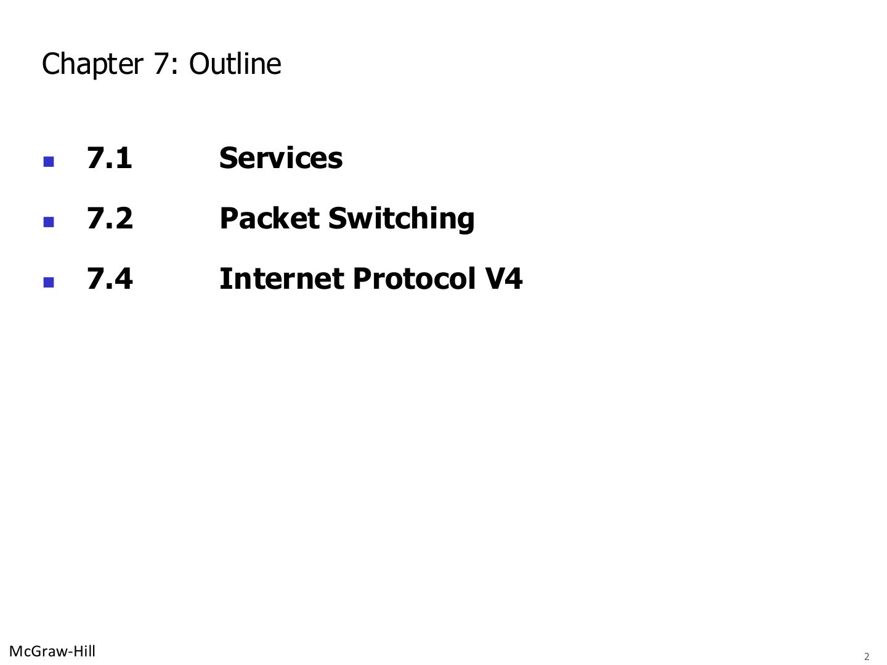
Three sections: 7.1 services (the duties of the network layer), 7.2 packet switching (virtual circuit vs. datagram), and 7.4 Internet Protocol version 4 (addressing, subnetting, DHCP, ARP, the header, fragmentation, NAT). Section 7.4 is most of the deck and most of the exam weight.
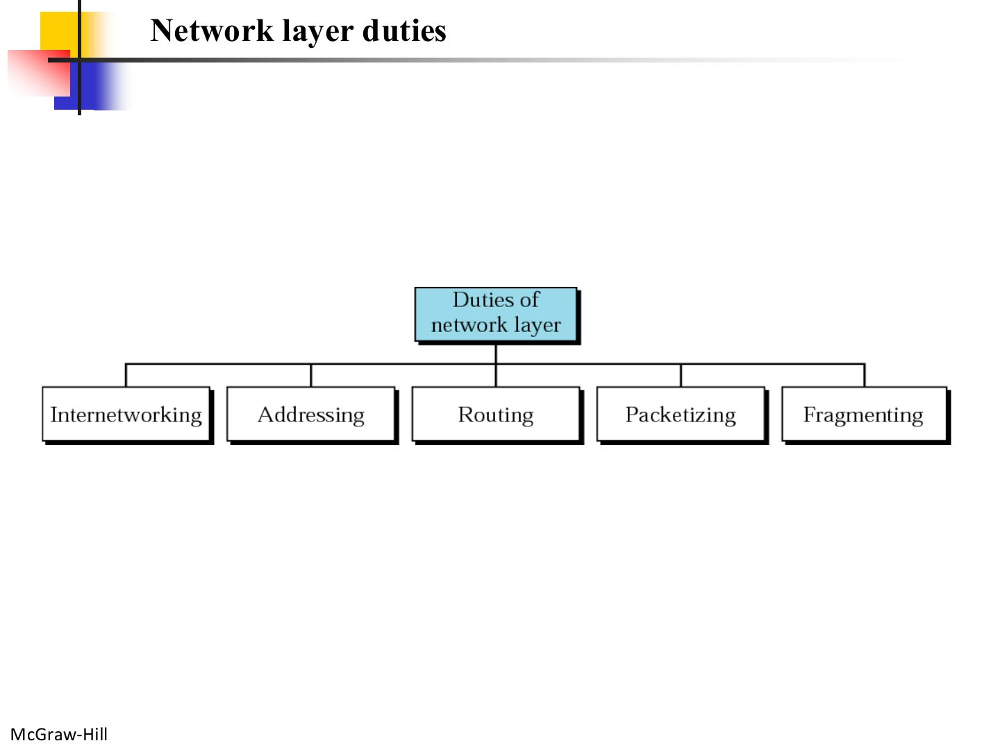
The network layer has five duties. Internetworking: joining different networks into one internet. Addressing: giving every interface a unique, global logical address (the IP address). Routing: finding the best path through the networks. Packetizing: wrapping the transport layer’s data in a packet. Fragmenting: cutting a packet into smaller pieces when the next network can’t carry it whole. Framing is not on the list: it belongs to the data link layer.
Seen again Ch 1 Part 2, slide 33: Network layer overview
Which is NOT a duty of the network layer in the slides?
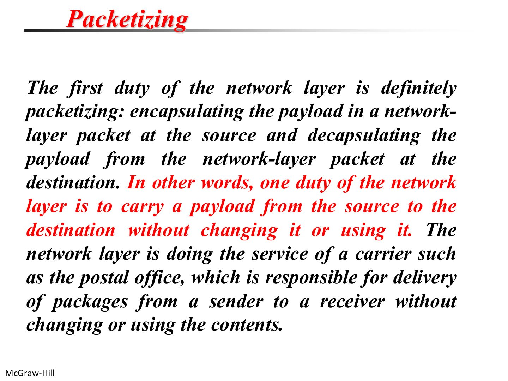
Packetizing is the first duty: at the source, the network layer encapsulates the payload (a segment from the transport layer) in a packet; at the destination it decapsulates it and hands the payload up. Its promise is to carry the payload from source to destination without changing it or using it, exactly like a postal service delivering a parcel without opening it.
What does packetizing promise about the payload?
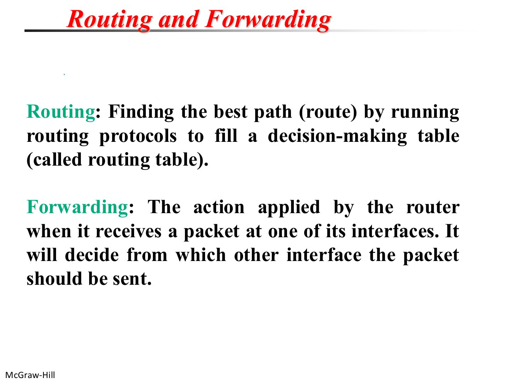
Routing is the planning job: routers run routing protocols with each other to find the best paths, and store the results in a decision-making table called the routing table. It happens in the background, before and while packets flow.
Forwarding is the action taken for each packet: when a packet arrives on one interface, the router looks up the destination in its table and decides which interface to send it out of. A comparison: routing is planning the trip on a map; forwarding is turning the right way at each junction.
Memory trick Routing is planning the trip; forwarding is turning at each junction.
Seen again Ch 8, slide 3: Routing protocols fill the table
Deciding which output interface to send an arriving packet on is:
Running protocols to find the best paths and fill the routing table is:
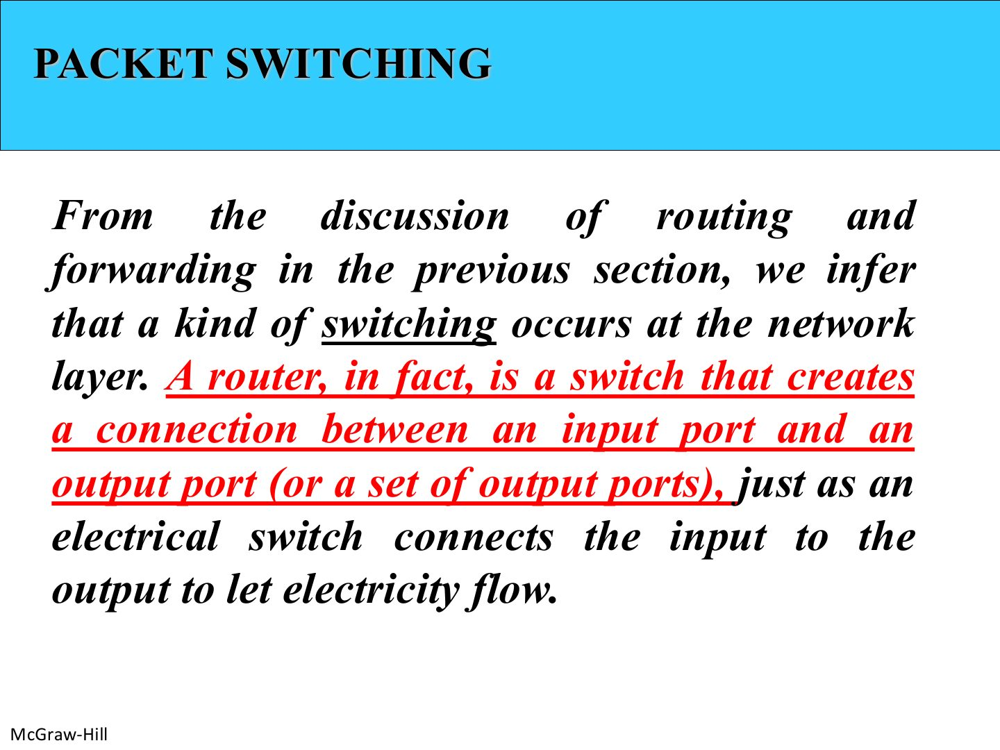
From routing and forwarding we can see that the network layer does a kind of switching. A router is, in fact, a switch: it connects one of its input ports to one (or more) of its output ports for each packet, just as an electrical switch connects an input to an output so current can flow.
Why can a router be called a switch?
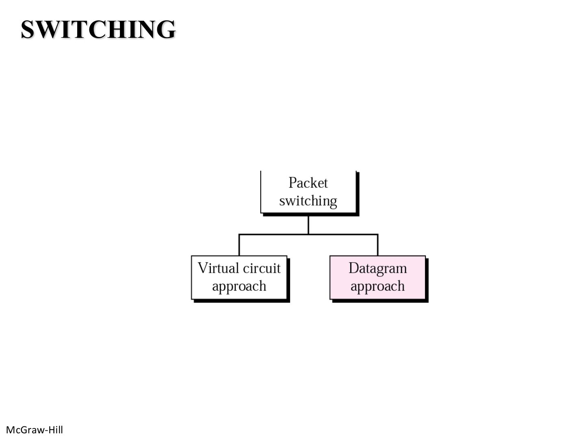
There are two approaches to packet switching. The virtual-circuit approach is connection-oriented: a path is set up first, and all packets of a message follow it. The datagram approach is connectionless: every packet is handled on its own and may take its own path. The Internet uses the datagram approach.
The two packet-switching approaches are:
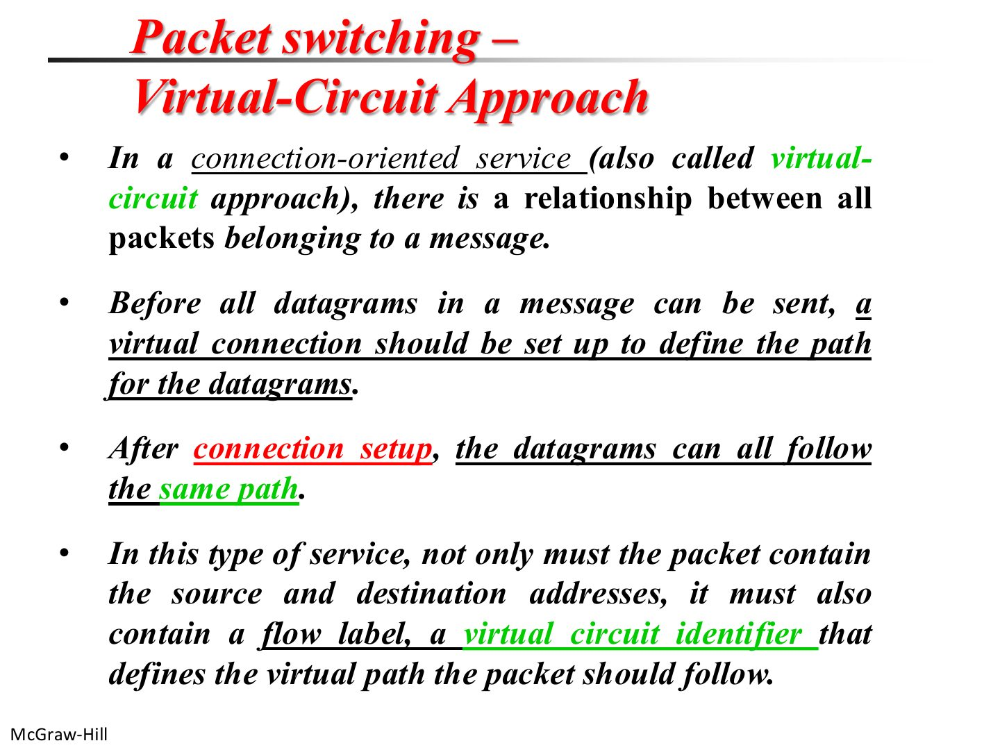
In a connection-oriented service, the virtual-circuit approach, all packets of a message are related: they belong to one connection. Before any are sent, a virtual connection is set up that fixes the path. After setup, all packets follow the same path, so they arrive in order. Each packet carries the source and destination addresses and also a flow label, a virtual circuit identifier that tells each switch which virtual path the packet belongs to.
In the virtual-circuit approach, what does each packet carry besides the addresses?
In a virtual-circuit network, all packets of a message follow the same path.
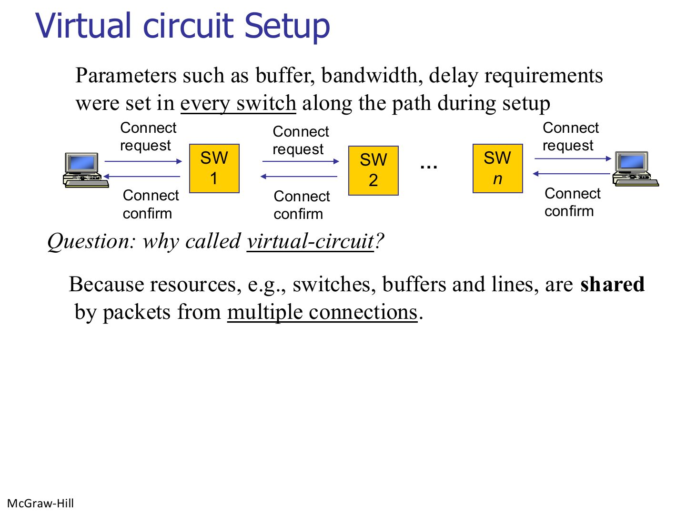
During setup, a connect request travels switch by switch (SW1, SW2 … SWn) to the destination, and each switch reserves what the connection needs: buffer space, bandwidth, delay limits. A connect confirm comes back, and data can flow. Why is it called virtual? Because the switches, buffers and lines are shared by packets of many connections; nothing is physically dedicated to one connection, unlike a real telephone circuit.
A virtual circuit is called virtual because resources are shared by packets of several connections.
What is reserved in every switch during virtual-circuit setup?
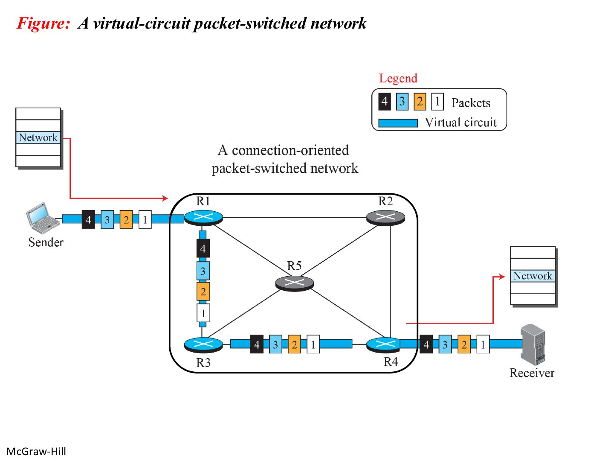
All packets of the message follow the same virtual circuit, here through R1, R3 and R4, so they arrive in order (1, 2, 3, 4), and no router has to make a fresh routing decision for each one.
In a virtual-circuit network, packets of a message arrive:
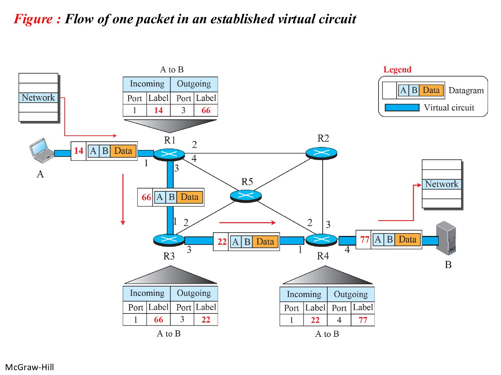
How a packet follows its circuit: each switch keeps a table that maps (incoming port, incoming label) → (outgoing port, outgoing label). The packet arrives with label 14; the switch looks it up, swaps the label to 66 and sends it out of the stored port; the next switch swaps 66 for 22, and so on. Labels only have meaning between two neighbouring switches, so they can be short.
What does a switch do with the label of a packet in an established virtual circuit?
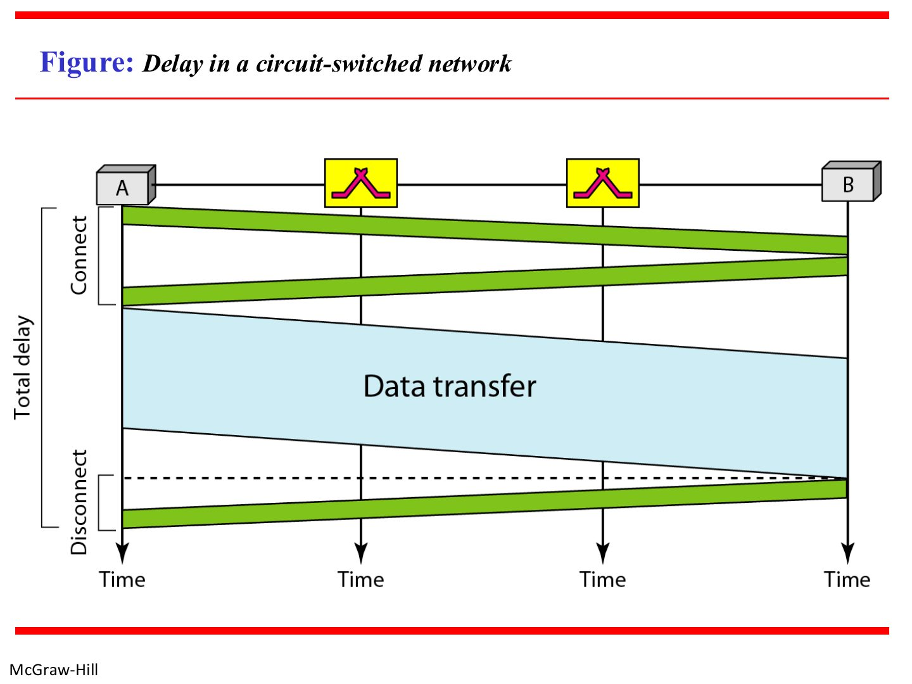
Delay in a circuit-switched or virtual-circuit network has three phases: connect (setup, the request going out and the confirm coming back), data transfer, and disconnect (teardown). Setup and teardown add delay before the first bit of data moves, but after that each packet just follows the established path with no per-packet routing decisions.
Which phases make up delay in a circuit-switched network?
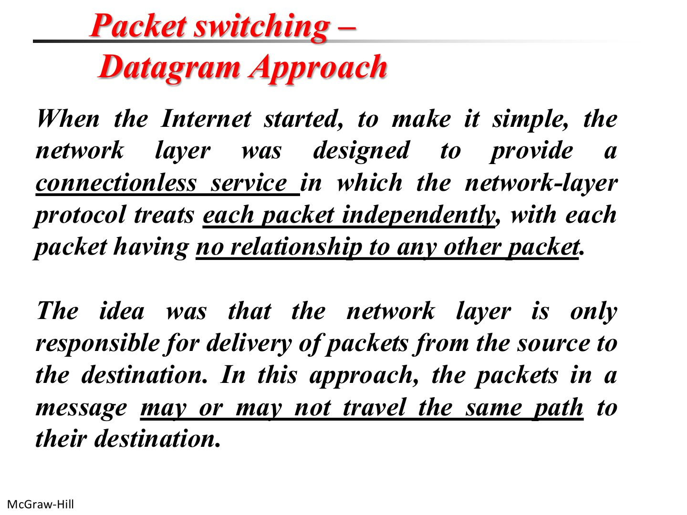
When the Internet began, the network layer was designed, for simplicity, to give a connectionless service: each packet is handled independently, with no relationship to any other packet. The network layer is only responsible for delivering each packet from source to destination. Packets of the same message may or may not take the same path, and keeping them in order (if needed) is left to the transport layer.
In the datagram approach, each packet is:
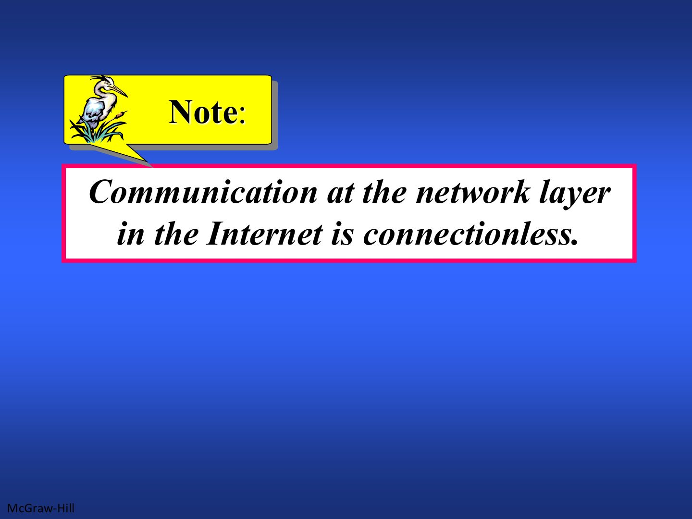
The one line to remember: communication at the network layer in the Internet is connectionless. IP is a datagram protocol: no setup, no reserved path, each packet routed on its own.
Communication at the network layer in the Internet is:
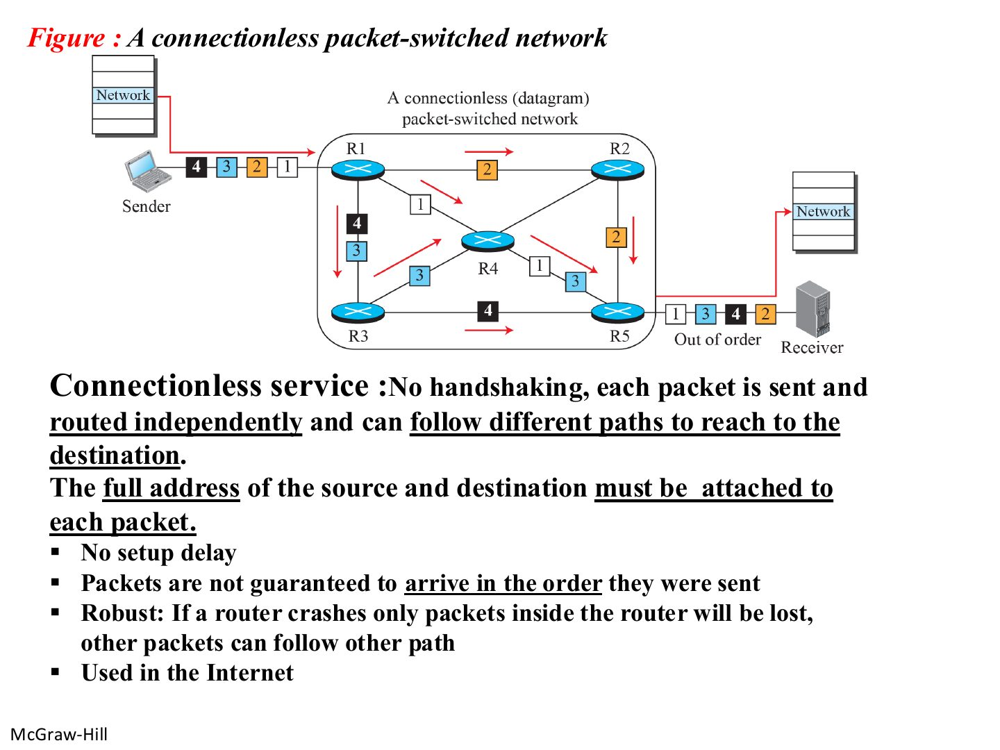
A connectionless network has no handshaking (no setup phase). Each packet is sent and routed independently and may follow a different path, so each packet must carry the full source and destination addresses: there is no label linking it to a connection. Consequences: there is no setup delay; packets are not guaranteed to arrive in the order sent (in the figure, packet 3 overtakes packet 2); and it is robust: if a router crashes, only the packets inside it are lost, and later packets simply take another path. This is what the Internet uses.
Compare the virtual-circuit and datagram approaches.
Virtual circuit: a connection is set up first, all packets follow the same path in order and carry a VC label, resources are reserved, but there is setup delay. Datagram: no setup, every packet carries full source and destination addresses and is routed independently, so packets can take different paths and arrive out of order; it is robust and is what the Internet uses.
In a datagram network, packets are guaranteed to arrive in order.
Why is a datagram network robust?
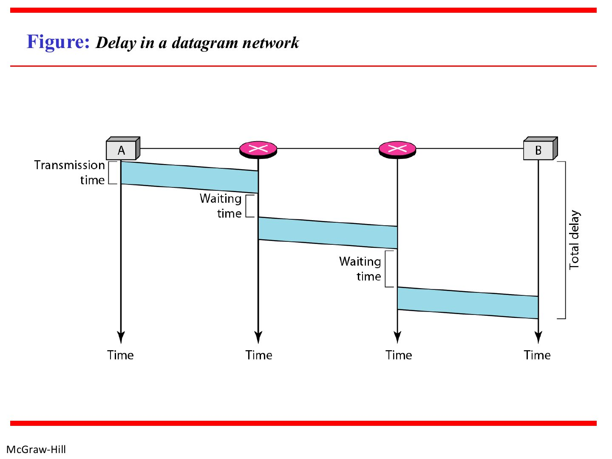
Delay in a datagram network is the transmission time plus the waiting (queuing) time at each router, with no setup phase. But each router must look up the destination for every packet, and different packets may wait different amounts of time.
Which delay does a datagram network NOT have?
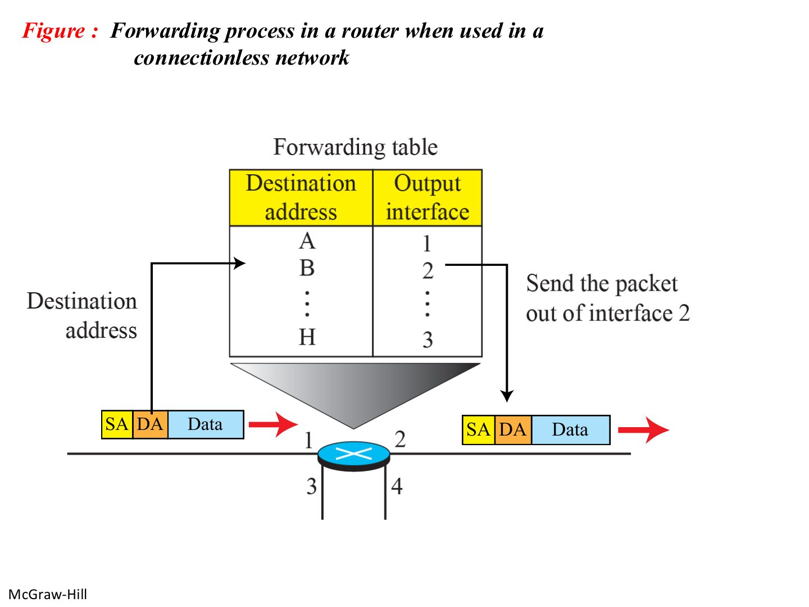
A connectionless router’s forwarding table maps destination address → output interface. When a packet arrives, the router reads only its destination address, finds it in the table, and sends the packet out of the matching interface (here, interface 2). The source address plays no part in the decision.
A connectionless router chooses the output interface using:
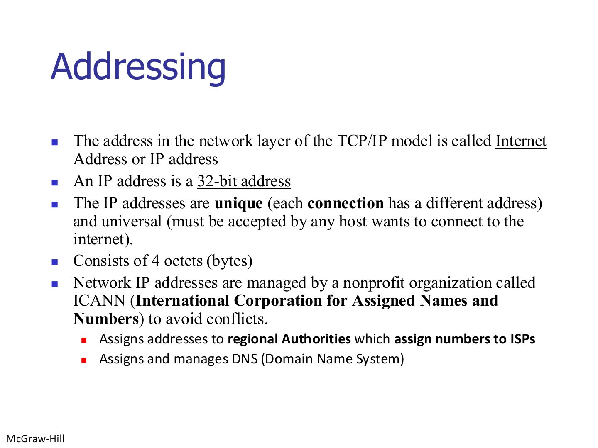
The network-layer address in TCP/IP is the IP address. An IPv4 address is 32 bits, written as 4 octets (bytes).
IP addresses are unique (each connection to the Internet has a different address) and universal (every host that wants to connect to the Internet must accept the same addressing system). To avoid conflicts they are managed by a non-profit organisation, ICANN (Internet Corporation for Assigned Names and Numbers). ICANN assigns blocks to regional authorities, which assign them to ISPs, which assign them to customers. ICANN also manages DNS (domain names).
An IPv4 address is:
Which organisation manages IP addresses globally?
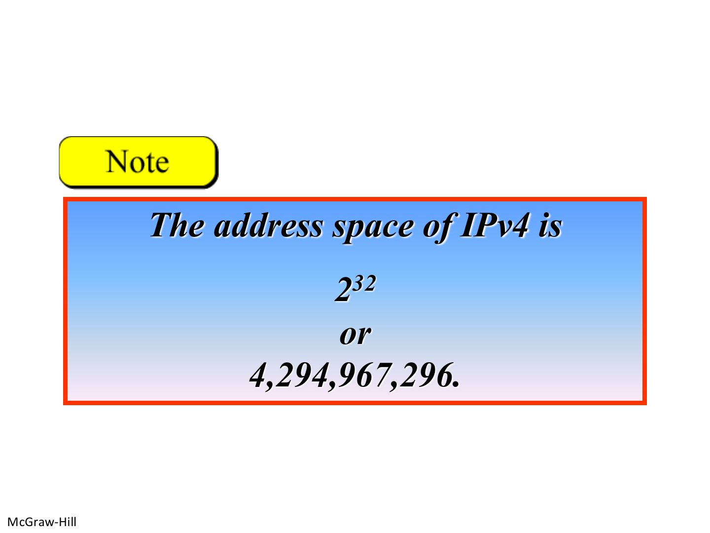
With 32 bits there are 2³² = 4,294,967,296 possible IPv4 addresses, about 4.3 billion. That sounds like a lot, but the world has far more devices than that, which is why classless addressing, private addresses with NAT, and IPv6 exist.
How many addresses does the IPv4 address space contain?
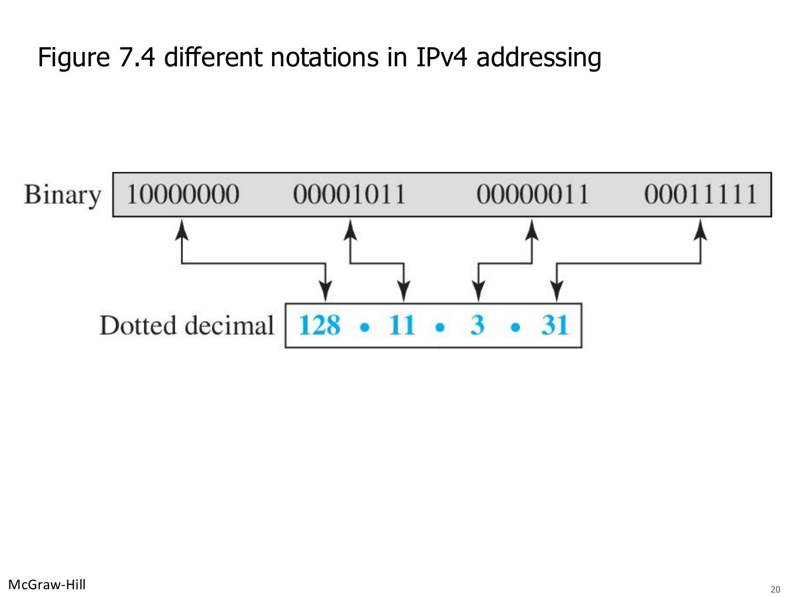
The same address can be written two ways. Binary: 10000000 00001011 00000011 00011111. Dotted decimal: each 8-bit group converted to decimal and separated by dots: 128.11.3.31. Dotted decimal is what people use; binary is what you need for masks and subnetting.
10000000 00001011 00000011 00011111 in dotted decimal is:
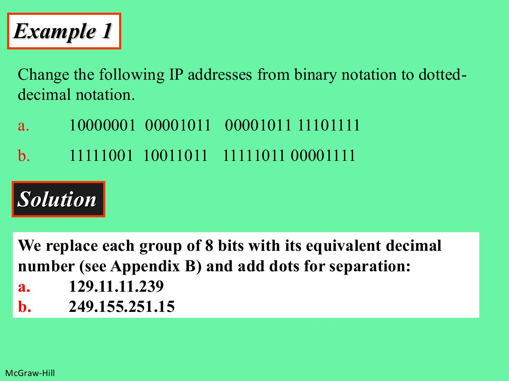
To convert binary to dotted decimal, convert each 8-bit group separately using the bit weights 128 64 32 16 8 4 2 1 and add the weights of the 1 bits. 10000001 = 128 + 1 = 129; 00001011 = 8 + 2 + 1 = 11; 11101111 = 128 + 64 + 32 + 8 + 4 + 2 + 1 = 239. So (a) is 129.11.11.239, and (b) is 249.155.251.15.
11000000 10101000 00000001 00001010 in dotted decimal is:
10101100 00010010 00000011 00010100 in dotted decimal is:
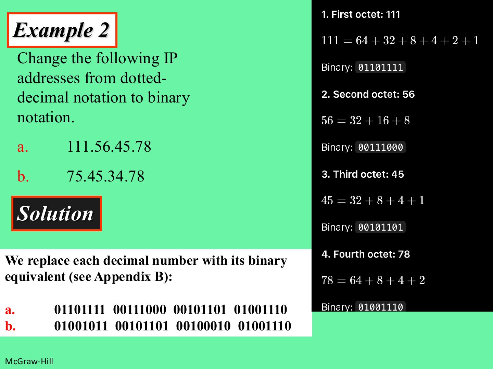
To convert decimal to binary, go through the weights 128, 64, 32 … 1: if the weight fits into what is left, write 1 and subtract it; otherwise write 0. 111: 128 doesn’t fit (0); 64 fits (1, leaves 47); 32 fits (1, leaves 15); 16 doesn’t (0); 8 fits (1, leaves 7); 4 (1, leaves 3); 2 (1, leaves 1); 1 (1). So 111 = 01101111. Always write 8 bits per octet, with leading zeros.
172.16.5.9 in binary is:
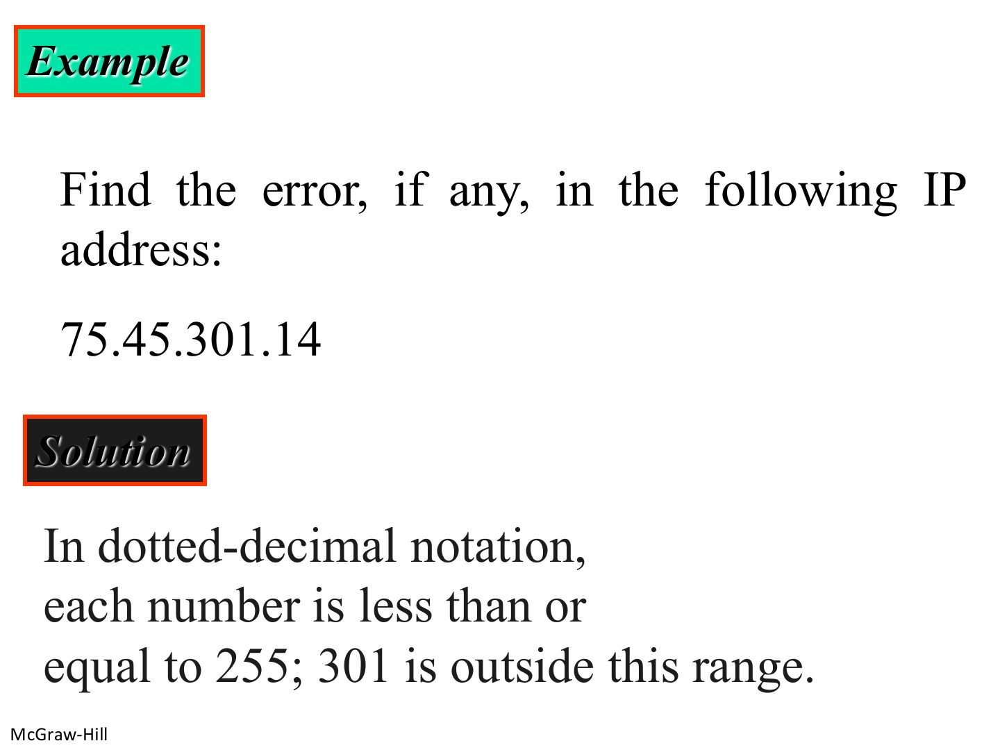
Each octet is 8 bits, so it must be between 0 and 255. 75.45.301.14 is invalid because 301 > 255. Other errors to look for: more or fewer than four octets (1.2.3.4.5), a mix of binary and decimal, and leading zeros such as 045 (not allowed in dotted decimal).
Which is a valid IPv4 address?
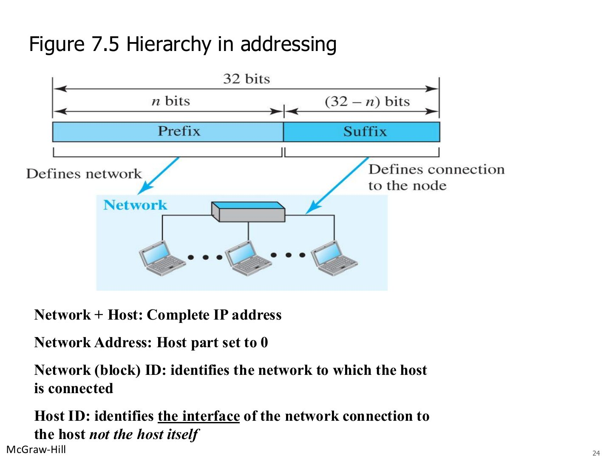
An IP address has two parts. The prefix (the first n bits) identifies the network the host is on; the suffix (the remaining 32 - n bits) identifies the connection of the host to that network. Setting the suffix to all 0s gives the network address (also called network or block ID). The suffix is the host ID, but strictly it identifies the host’s interface (its connection), not the machine itself.
Setting the host part of an address to all 0s gives:
The host ID identifies the host’s interface (its connection to the network), not the machine itself.
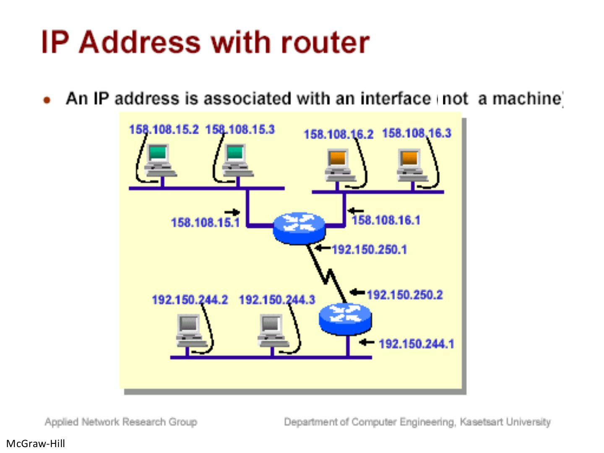
An IP address belongs to an interface, not to a machine. A router connected to three networks has three interfaces, and so three IP addresses, each one from the network that interface is on. A laptop with both Wi-Fi and Ethernet connected likewise has two IP addresses.
A router connected to three networks has three IP addresses.
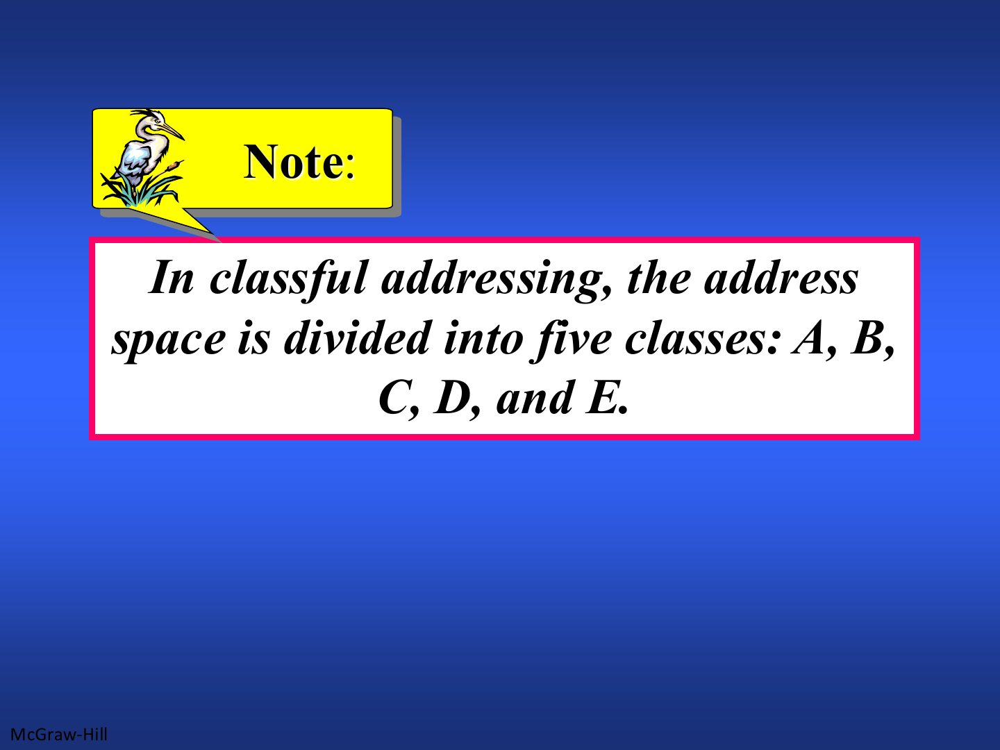
In the original classful addressing, the address space was divided into five classes: A, B, C, D and E. The class decided how many bits were network and how many host, so it decided how big each network was.
How many classes does classful addressing have?
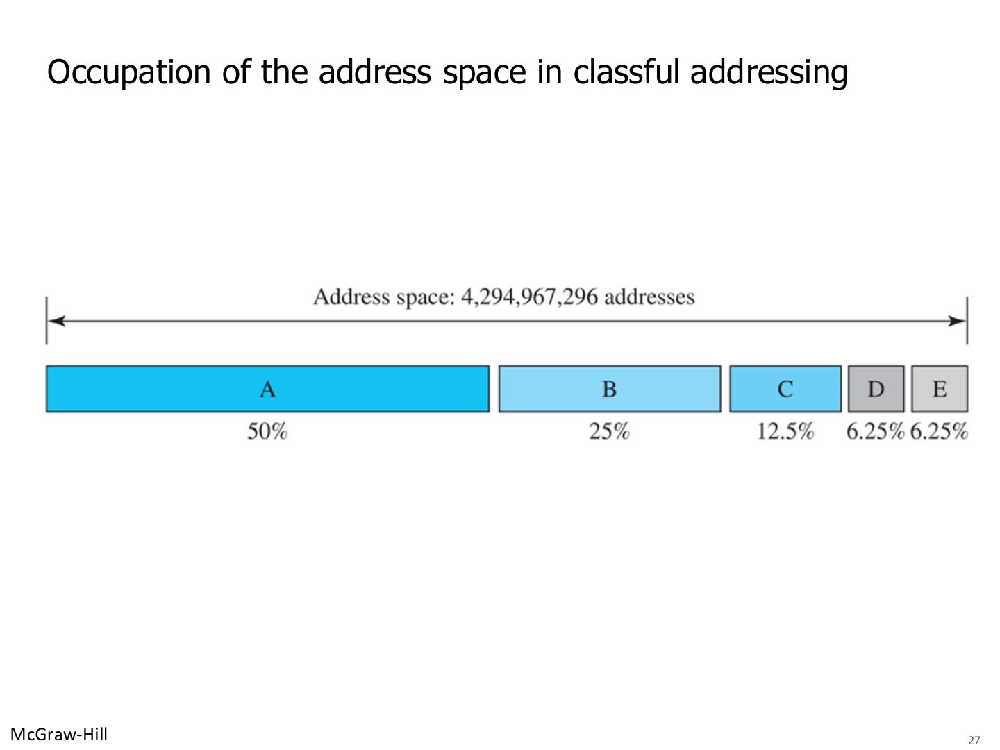
How the address space was shared out: class A took half of all addresses (50%), class B a quarter (25%), class C an eighth (12.5%), and classes D and E 6.25% each. Class A had very few, huge blocks, which wasted many addresses: one of the reasons classful addressing was abandoned.
What share of the IPv4 address space did class A occupy?
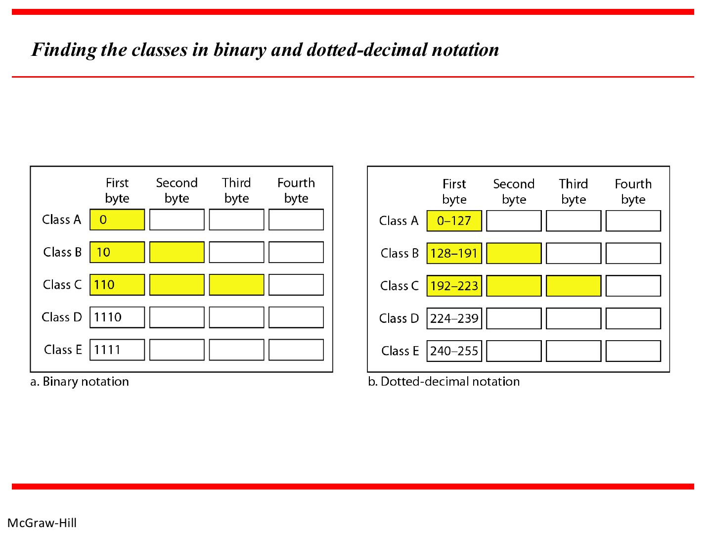
The class can be read from the first bits: A starts with 0, B with 10, C with 110, D with 1110, E with 1111.
Or from the first byte in decimal: A 0–127, B 128–191, C 192–223, D 224–239, E 240–255. Remember the upper limits 127, 191, 223, 239, 255 and you can classify any address instantly.
Memory trick First-byte limits: 127 / 191 / 223 / 239 / 255.
An address starting with 190 is class:
An address whose first bits are 110 is class:
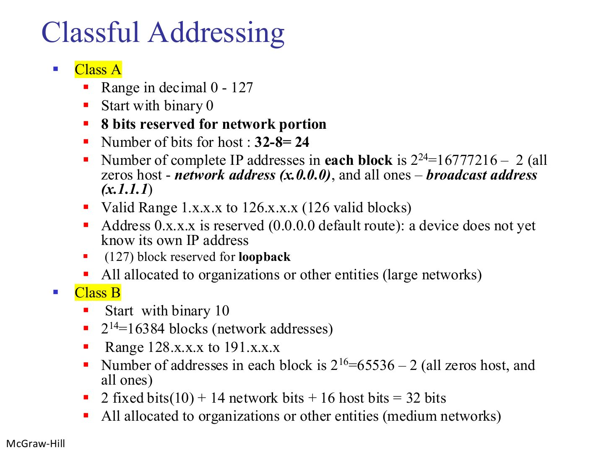
Class A: first bit 0, first byte 0–127. 8 network bits and 24 host bits, so each block has 2²⁴ = 16,777,216 addresses, minus 2 usable (the all-0s host part is the network address x.0.0.0 and the all-1s host part is the broadcast address x.255.255.255), giving 16,777,214 hosts. The valid blocks are 1 to 126 (126 blocks): 0.x.x.x is reserved (0.0.0.0 means the default route, or a device that doesn’t know its own address yet), and 127.x.x.x is reserved for loopback (a host sending to itself, for testing, as in ping 127.0.0.1). All class A blocks are allocated (large networks).
Class B: first bits 10, first byte 128–191. 2 fixed bits + 14 network bits give 2¹⁴ = 16,384 blocks; 16 host bits give 2¹⁶ = 65,536 addresses per block, 65,534 usable. All allocated (medium networks).
The 127.x.x.x block is reserved for:
How many usable host addresses does one class B block have?
How many class B blocks are there?
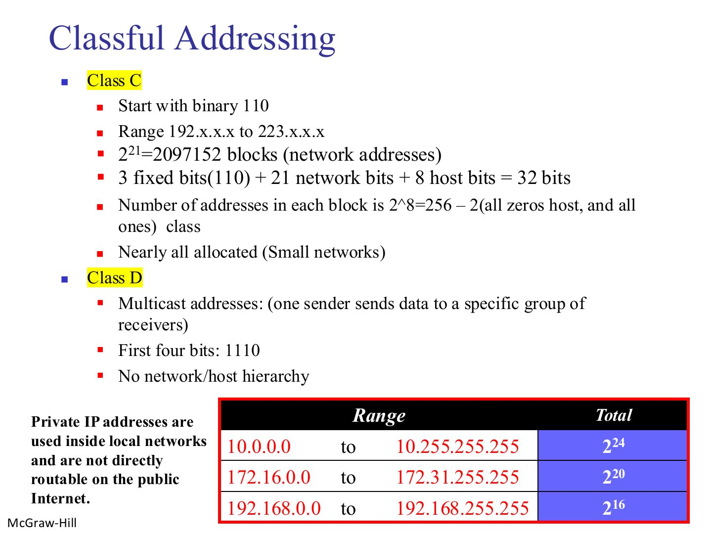
Class C: first bits 110, first byte 192–223. 3 fixed bits + 21 network bits give 2²¹ = 2,097,152 blocks; 8 host bits give 256 addresses per block, 254 usable. Nearly all allocated (small networks).
Class D is for multicast: one sender to a specific group of receivers. Its first four bits are 1110, and it has no network/host split: the whole address names a group. Private IP addresses are used inside local networks and are not routable on the public Internet: 10.0.0.0–10.255.255.255, 172.16.0.0–172.31.255.255 and 192.168.0.0–192.168.255.255. Anyone may use them internally; to reach the Internet, they are translated by NAT (slide 82 onward). Watch the 172 range: 172.16 to 172.31 only, so 172.32.x.x is public.
Seen again This deck, slide 84: Private addresses and NAT
Which address is private?
Class D addresses are used for:
How many usable hosts are in one class C block?
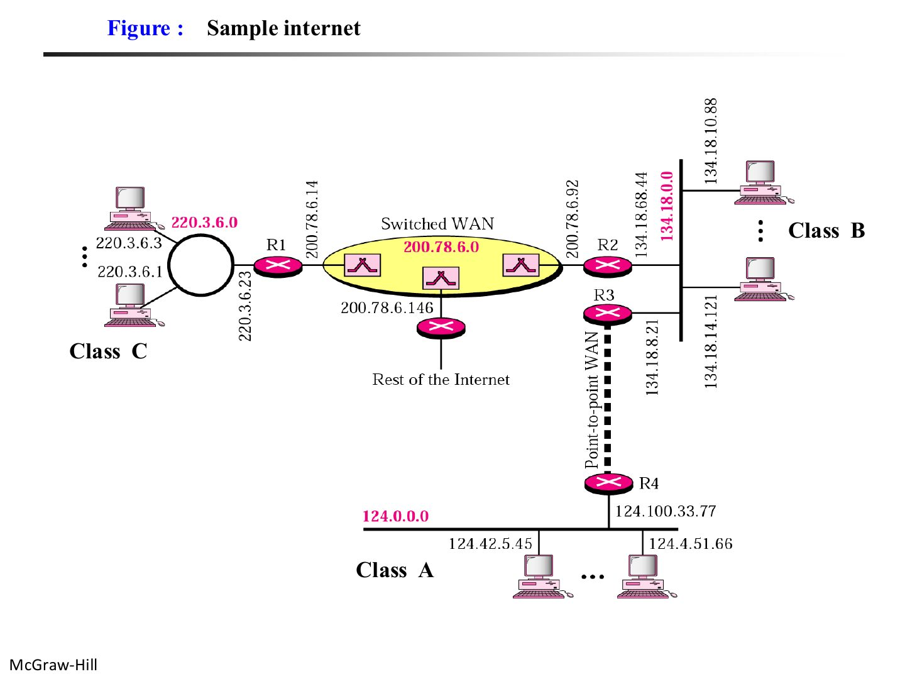
The figure shows a sample internet mixing networks of different classes (A, B and C), joined by routers and WAN links. Each network has its own network address, and each router interface takes an address from the network it is on.
In the sample internet, what does each router interface get?
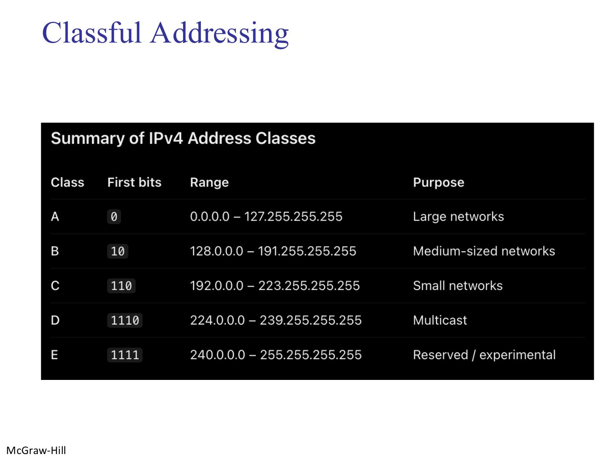
Class E (first bits 1111) is used for:
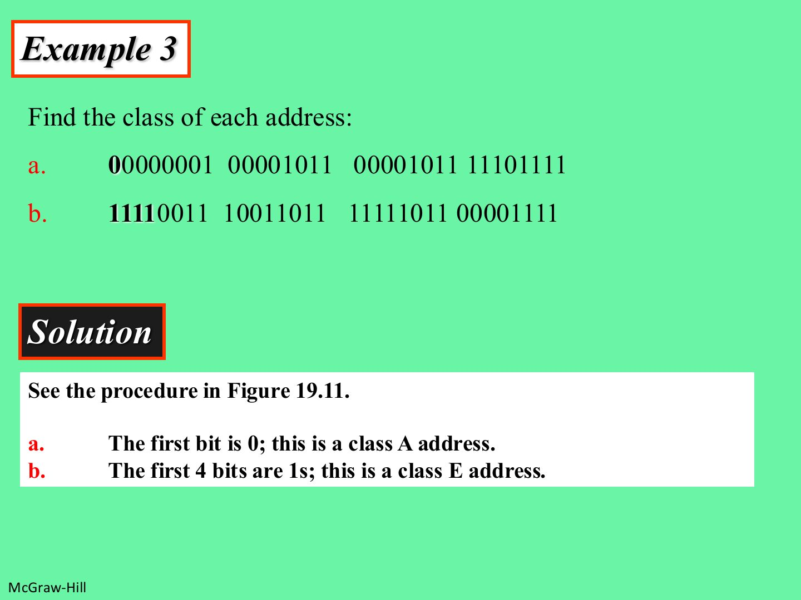
Classifying in binary: (a) 00000001 … starts with 0, so class A. (b) 11110011 … starts with 1111, so class E. Read only as many leading bits as you need: stop at the first 0.
An address in binary starts 11110011… Its class is:
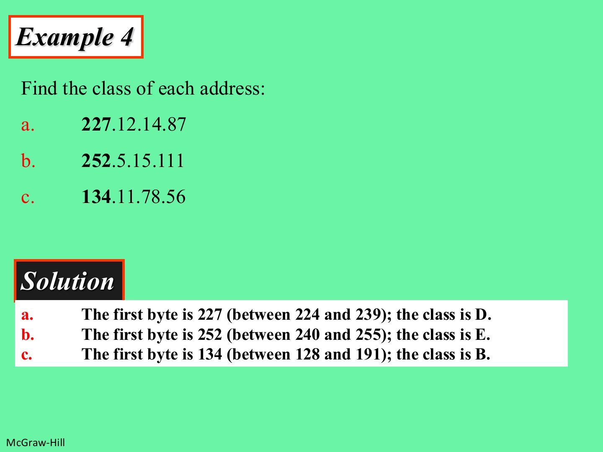
The address 227.12.14.87 is class:
The address 245.10.1.1 is class:
Finding the classful network address: work out the class, keep the network bytes and set the host bytes to 0. 23.56.7.91 is class A (first byte 23), so only the first byte is network: the network address is 23.0.0.0.
The classful network address of 23.56.7.91 is:
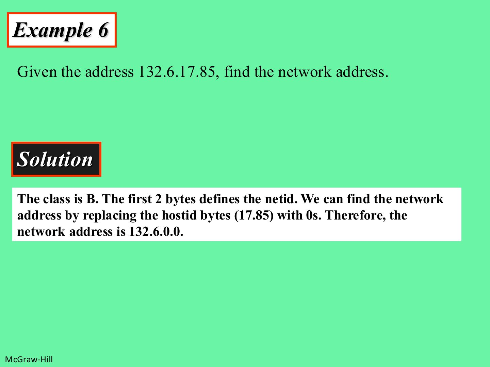
132.6.17.85 is class B (first byte 132), so the first two bytes are network: the network address is 132.6.0.0. For class C, keep three bytes: 201.14.78.65 → 201.14.78.0.
The network address of 201.14.78.65 (classful) is:
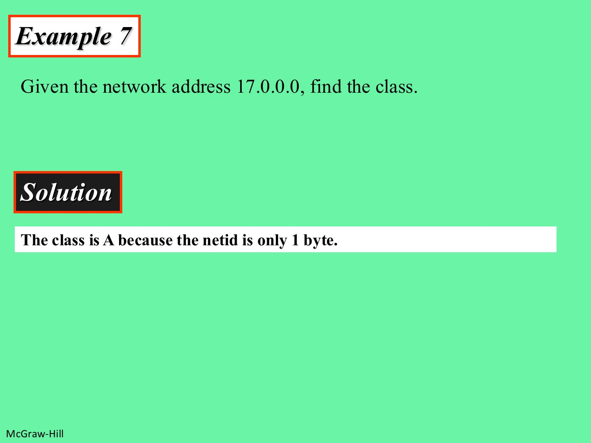
Going the other way: given the network address 17.0.0.0, the netid is only one byte, so it is class A (which also matches 17 being in 0–127).
A network address 17.0.0.0 belongs to class:
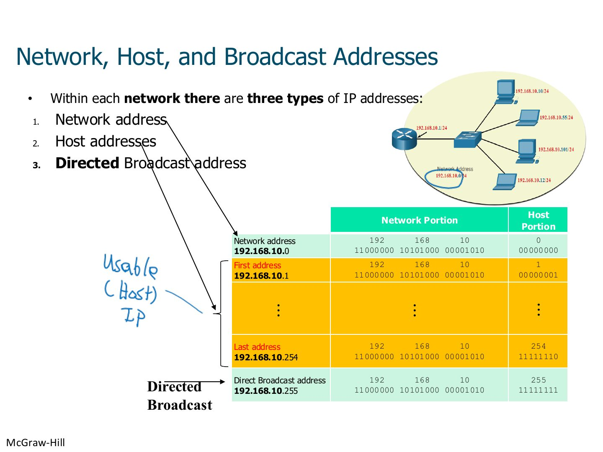
Every network has three kinds of address. The network address: host part all 0s, for example 192.168.10.0; it names the network and can’t be given to a host. Host addresses are everything between: here 192.168.10.1 (the first usable) to 192.168.10.254 (the last usable). The directed broadcast address has the host part all 1s, 192.168.10.255; a packet sent to it reaches every host on that network.
In 192.168.10.0/24, which is NOT a usable host address?
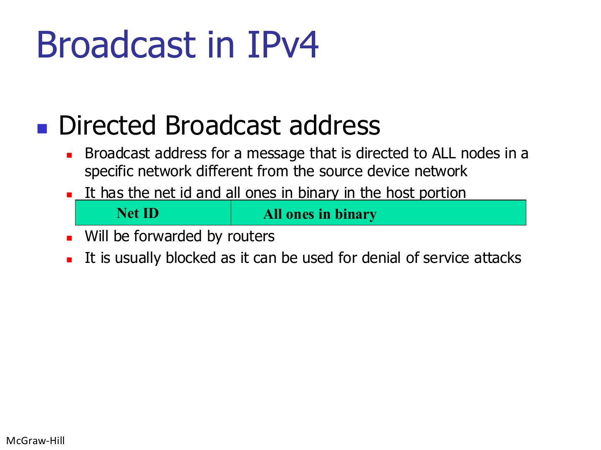
A directed broadcast address is used to send a message to all nodes of a specific network, usually a network different from the sender’s. It is the network ID with all 1s in the host part (192.168.10.255 for 192.168.10.0/24). Routers forward it towards that network. Because attackers have used it to flood networks (denial-of-service attacks), it is usually blocked.
A directed broadcast address has:
Routers forward packets sent to a directed broadcast address.
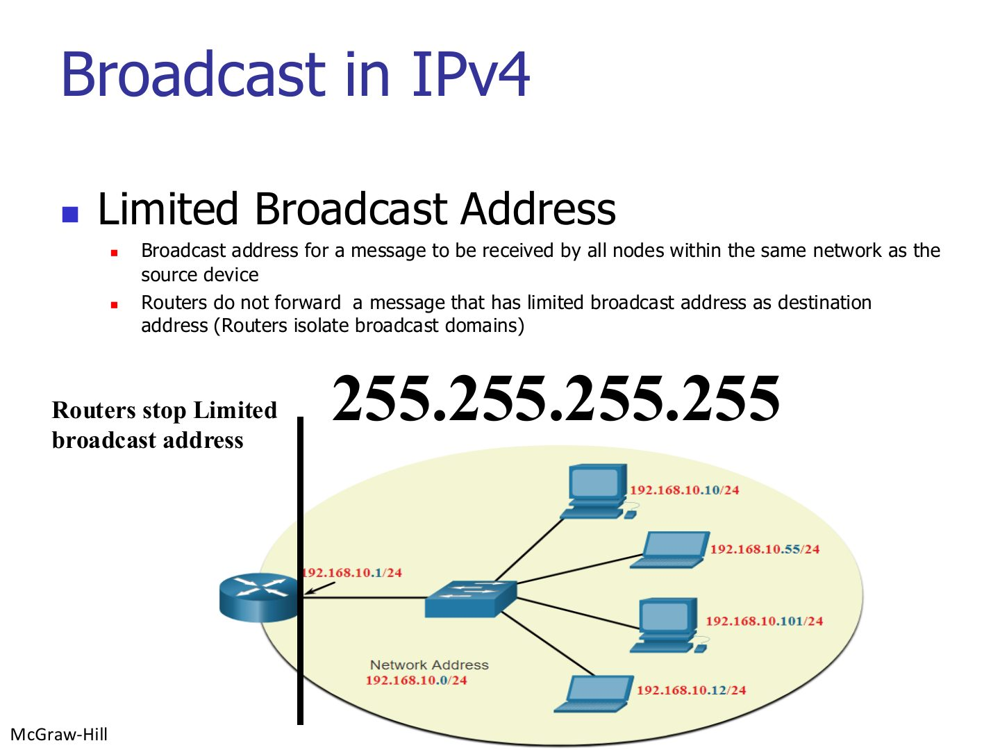
A limited broadcast address is for a message to all nodes on the sender’s own network. It is 255.255.255.255, and routers never forward it, because routers separate broadcast domains. DHCP uses it, for example, when a new host doesn’t yet know its own network. The trap: the directed broadcast (192.168.10.255) can cross routers; the limited broadcast (255.255.255.255) cannot.
Trap Directed broadcast (e.g. 192.168.10.255) CAN cross routers; limited broadcast 255.255.255.255 cannot.
Which broadcast address is never forwarded by routers?
The directed broadcast address of 192.168.10.0/24 is:
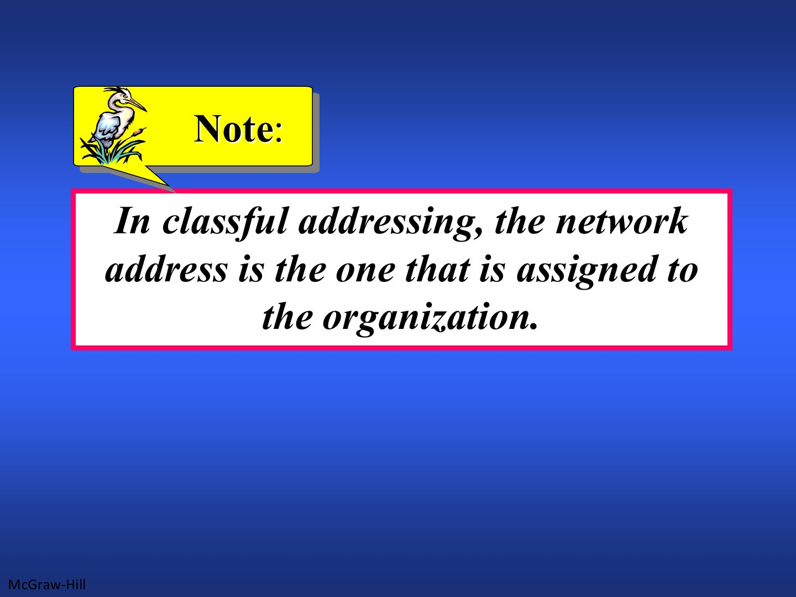
In classful addressing, what an organisation is given is a network address, which stands for the whole block: for example 132.6.0.0 gives it every address from 132.6.0.0 to 132.6.255.255.
In classful addressing, what is an organisation given?
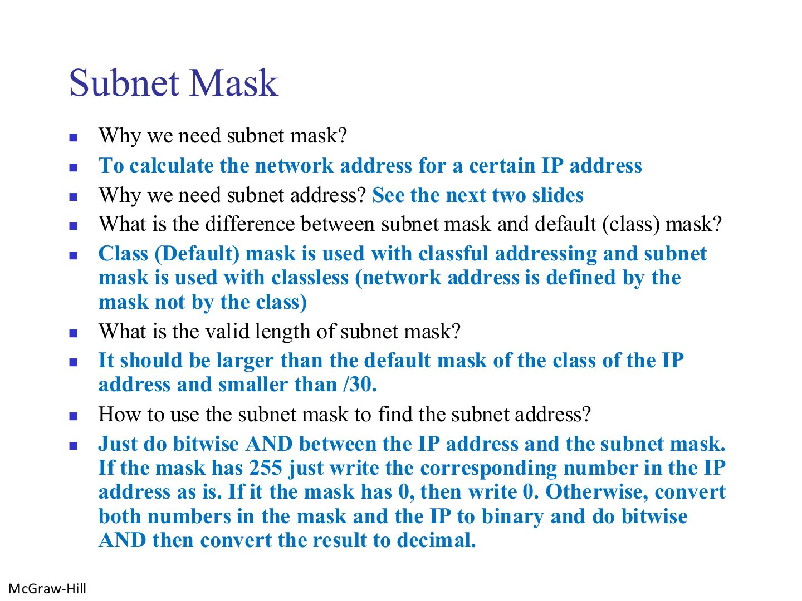
Questions the slide answers. Why a mask? To calculate the network (subnet) address of any IP address: the mask marks which bits are network.
Default mask vs. subnet mask: the default (class) mask belongs to classful addressing, where the class decides the network size. A subnet mask belongs to classless addressing, where the mask decides it.
Valid lengths: a subnet mask must be longer than the default mask of the address’s class (it borrows host bits), and no longer than /30 (a /31 or /32 would leave no usable hosts, since 2 addresses are always lost to network and broadcast).
How to use it: do a bitwise AND of the address and the mask. Shortcut, octet by octet: where the mask is 255, copy the address octet; where it is 0, write 0; for the one octet in between, convert both to binary, AND them, and convert back.
Tip Mask octets to know by heart: 128 · 192 · 224 · 240 · 248 · 252 · 254 · 255.
What is the longest valid subnet mask according to the slide?
Using the shortcut, what do you write where the mask octet is 255?
In classless addressing, the mask (not the class) defines the network address.
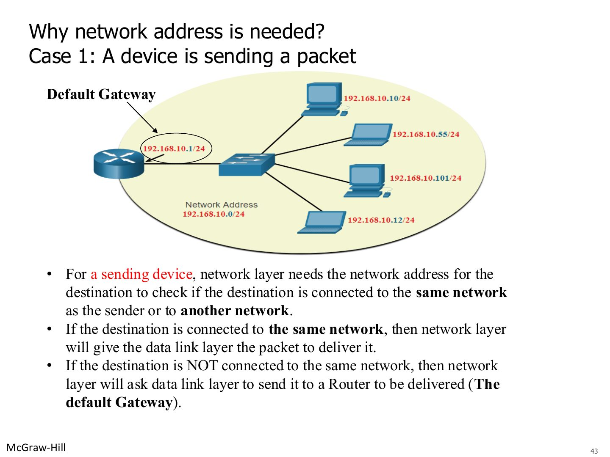
Case 1, a host sending. The network layer needs the destination’s network address to decide: is the destination on the same network as me, or another one? It ANDs the destination address with its own mask and compares the result with its own network address. If it is the same network, the packet is handed to the data link layer to deliver directly to the destination (using the destination’s MAC). If it is another network, the data link layer is asked to send the frame to a router, the default gateway (the router interface on the sender’s own network), which will forward it. Example: 192.168.10.10/24 sending to 192.168.20.5: 192.168.10.0 ≠ 192.168.20.0, so it goes to the gateway.
Host 192.168.10.10/24 sends to 192.168.20.5. What does its network layer do?
It ANDs both addresses with 255.255.255.0: 192.168.10.0 vs. 192.168.20.0, which are different networks, so it hands the packet to the data link layer addressed to the default gateway (the router interface on its own network), not to the destination directly.
Host 192.168.10.10/24 sends to 192.168.10.77. Where does the frame go?
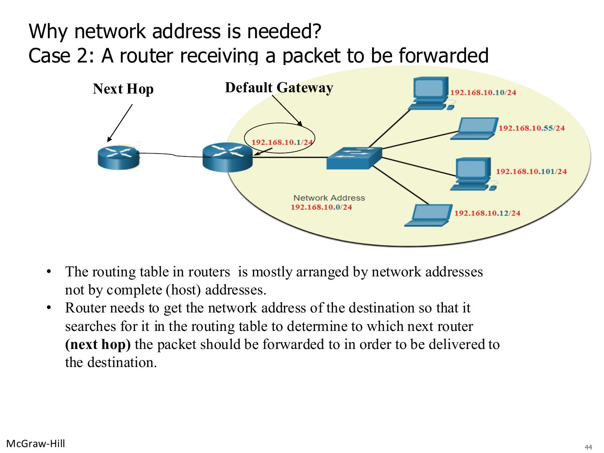
Case 2, a router forwarding. Routing tables are mostly organised by network addresses, not by individual host addresses (one entry covers a whole network). So the router ANDs the destination address with each entry’s mask to get the destination’s network address, finds the matching entry, and sends the packet to the next hop listed there.
Routing tables are mostly organised by:
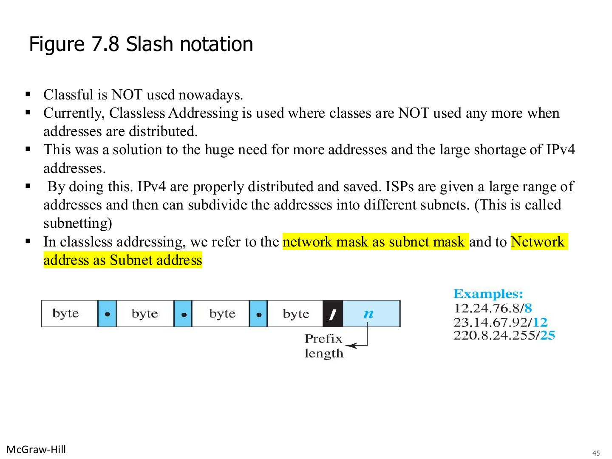
Classful addressing isn’t used any more. Today addresses are given out with classless addressing (CIDR), where classes play no part: the block size is set by the mask, written as /n.
This was the answer to the huge demand for addresses and the shortage of IPv4. Blocks can now be any size, so addresses are distributed more carefully: ISPs receive large ranges and subdivide them into smaller blocks for their customers. Dividing a block into smaller networks is called subnetting. In classless addressing the mask is called the subnet mask and the network address the subnet address. Notation: byte.byte.byte.byte/n, where n (the prefix length) is the number of network bits, for example 220.8.24.255/25.
Classful addressing is the system used to distribute addresses today.
In 220.8.24.255/25, what does /25 mean?
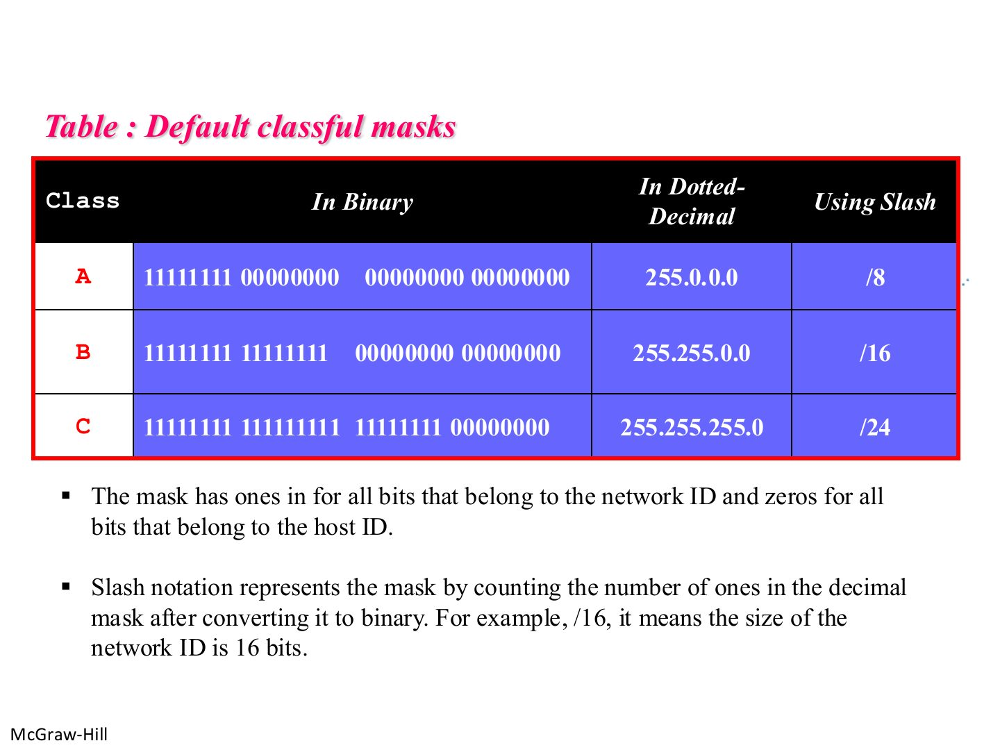
The default masks of the classes: A = 255.0.0.0 = /8, B = 255.255.0.0 = /16, C = 255.255.255.0 = /24. A mask has 1s for every network bit and 0s for every host bit, with all the 1s first. The slash number just counts the 1s: /16 means the first 16 bits are network.
The default mask of a class C address is:
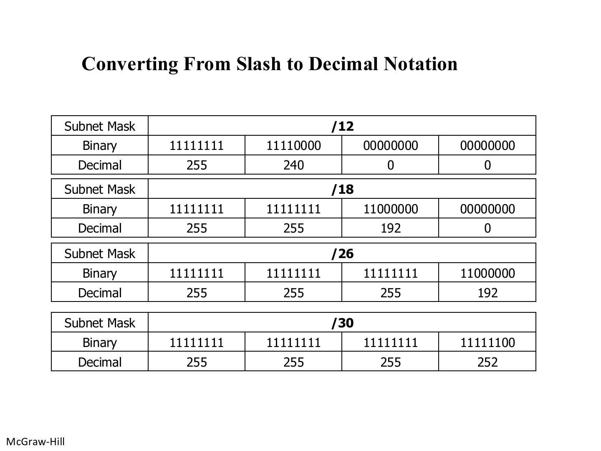
To turn /n into dotted decimal, fill whole octets with 255 (8 bits each) and put the remaining bits at the start of the next octet. /12 = 8 + 4: 255, then 4 ones = 11110000 = 240 → 255.240.0.0. /18 = 16 + 2 → 255.255.192.0. /26 = 24 + 2 → 255.255.255.192. /30 = 24 + 6 → 255.255.255.252. Going backwards, count the 1s: 255.255.255.248 = 24 + 5 = /29.
Tip Mask octets to know by heart: 128 · 192 · 224 · 240 · 248 · 252 · 254 · 255.
/20 in dotted decimal is:
/27 in dotted decimal is:
255.255.255.248 in slash notation is:
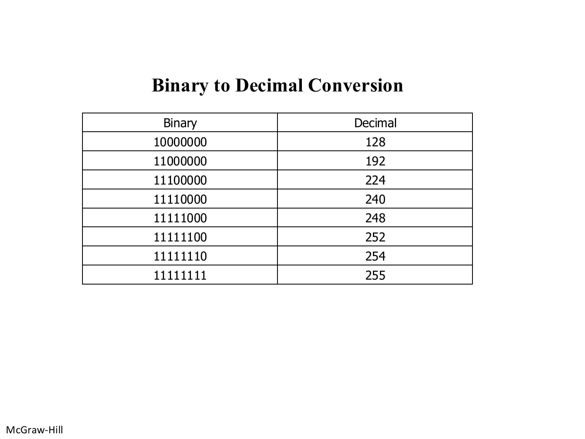
The only values a mask octet can take: 1 one = 128, 2 = 192, 3 = 224, 4 = 240, 5 = 248, 6 = 252, 7 = 254, 8 = 255. Learn this list; then the block size for an octet is simply 256 minus the value: 192 → 64, 224 → 32, 240 → 16, 248 → 8, 252 → 4.
Which value can NOT appear as a mask octet?
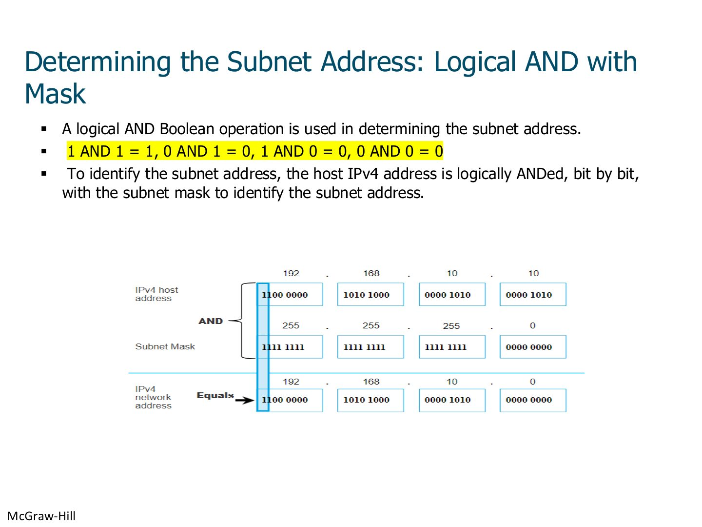
AND gives 1 only when both bits are 1: 1 AND 1 = 1, and every other combination is 0. ANDing the host address with the mask, bit by bit, keeps the network bits (where the mask has 1s) and clears the host bits (where it has 0s), which leaves exactly the subnet address. Example: 192.168.10.10 AND 255.255.255.0 = 192.168.10.0.
192.168.10.10 AND 255.255.255.0 equals:
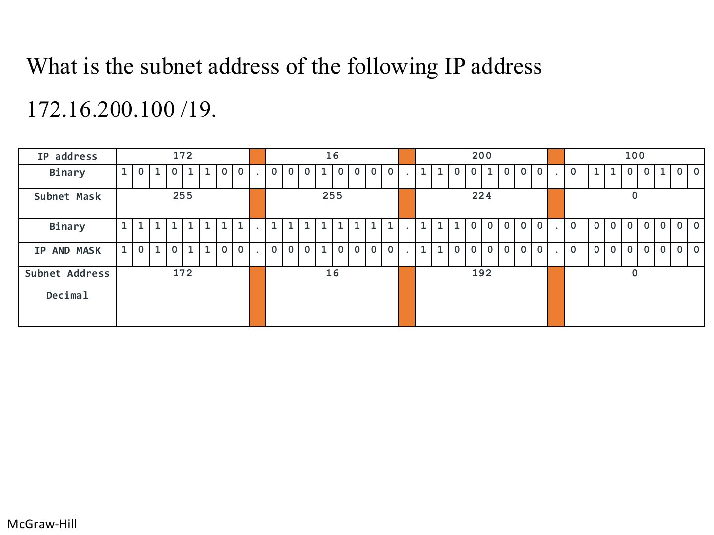
172.16.200.100/19. The mask /19 = 255.255.224.0. The first two octets have mask 255, so copy them: 172.16. The last has mask 0, so write 0. Only the third octet needs binary: 200 = 11001000, 224 = 11100000, AND = 11000000 = 192. Subnet address: 172.16.192.0. Shortcut with block size: 256 - 224 = 32; the multiple of 32 at or below 200 is 192.
The subnet address of 172.16.200.100/19 is:
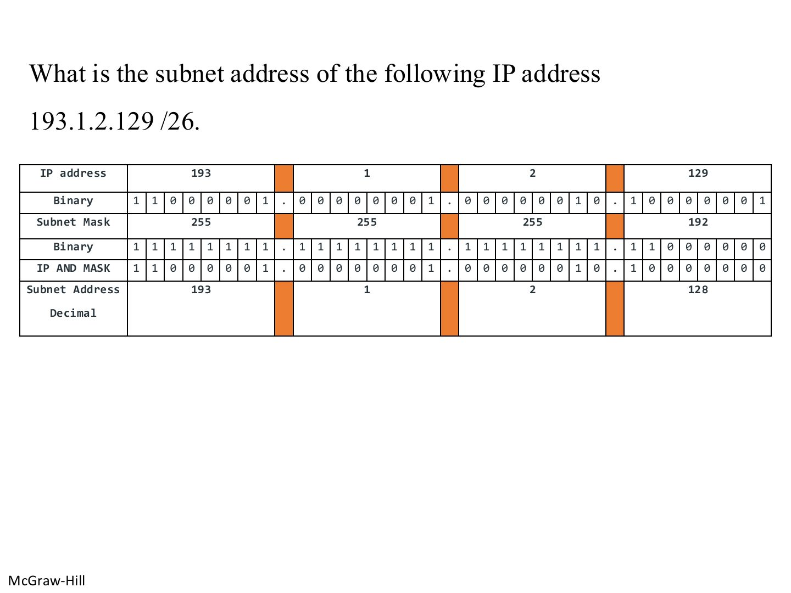
193.1.2.129/26. The mask /26 = 255.255.255.192, so only the last octet needs work: 129 = 10000001, 192 = 11000000, AND = 10000000 = 128. Subnet address: 193.1.2.128. Block-size check: 256 - 192 = 64; multiples of 64 are 0, 64, 128, 192; 129 falls in the block starting at 128.
The subnet address of 193.1.2.129/26 is:
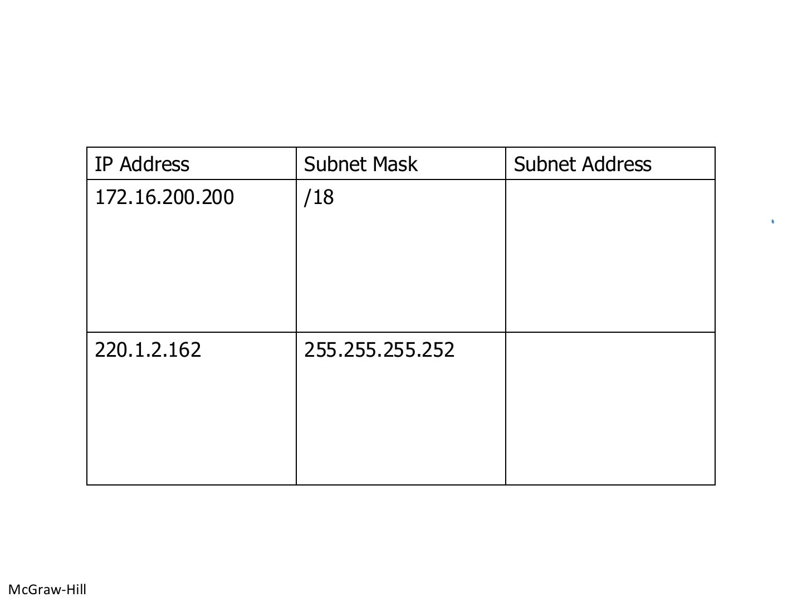
172.16.200.200/18: the mask is 255.255.192.0, block size 64 in the third octet; the multiple of 64 at or below 200 is 192, so the subnet is 172.16.192.0. (In binary: 200 AND 192 = 192.)
220.1.2.162 with mask 255.255.255.252 (/30): block size 4 in the last octet; the multiple of 4 at or below 162 is 160, so the subnet is 220.1.2.160 (its broadcast is .163, leaving .161 and .162 for hosts).
The subnet address of 172.16.200.200/18 is:
The subnet address of 220.1.2.162 with mask 255.255.255.252 is:
The subnet address of 10.1.130.5/17 is:
The motivating picture: one organisation (a campus) has one block of addresses but many departments, each with its own LAN (Art, English, French, Music, CS, EE, Math, Physics), all connected to a main router. Giving each department its own piece of the block is subnetting.
Why does the campus in the figure need subnetting?
The benefits of subnetting: less overall traffic (each subnet is its own broadcast domain, so broadcasts stay local); smaller networks are easier to manage and troubleshoot; more control over the address space; and more security, since traffic between subnets passes through a router where it can be filtered.
Which is a benefit of subnetting?
The host part of the address is split in two: the most significant bits become the subnet number and the rest stay the host number. So the address now has three levels: main network, subnet, host. The subnet mask marks which bits are subnet and which are host, and ANDing it with an address gives the subnet address. The figure: 172.16.0.0/22 has 22 network bits and 10 host bits, so each subnet has 2¹⁰ - 2 = 1022 usable addresses.
A /22 network has how many usable host addresses?
To routers outside the organisation, a subnetted site looks like a single network.
After subnetting, an IP address has how many levels?
The steps, with the example 192.168.1.0/24 into 5 subnets. (1) 5 - 1 = 4. (2) 4 in binary is 100. (3) That is 3 bits. (4) Add them to the default mask: /24 + 3 = /27 = 255.255.255.224. A quicker way to get the bits: the smallest n with 2ⁿ ≥ the number of subnets (2³ = 8 ≥ 5).
(5–6) The weight is the value of the last 1 bit of the mask in its octet: 224 = 11100000, the last 1 is worth 32 (also 256 - 224). (7–10) The first subnet is the original address, 192.168.1.0/27; keep adding 32: .32, .64, .96, .128, .160, .192, .224, and stop before passing 255. That gives 8 subnets of 32 addresses each.
Memory trick Bits needed = smallest n with 2ⁿ ≥ subnets. Block size = 256 - the mask octet.
A class C network must be split into 6 subnets. The new mask is:
200.10.20.0/24 must be split into 12 subnets. How many hosts does each subnet get?
192.168.1.0/24 is split into /27 subnets. What is the third subnet address?
Given a classful network and a subnet mask: number of subnets = 2^(subnet mask length - classful mask length), the number of bits borrowed. Hosts per subnet = 2^(32 - subnet mask length) - 2, subtracting the network and broadcast addresses, which can’t be given to hosts. Example: class B (/16) with /20 → 2⁴ = 16 subnets, each with 2¹² - 2 = 4094 hosts.
A class B network uses mask /20. How many subnets?
How many hosts per subnet with mask /20?
How many usable hosts does a /29 subnet have?

The slide’s table is blank in the PDF; these are the answers for 192.168.1.0/24 split into /27 subnets (block of 32 addresses, 30 usable). For each subnet: network = the multiple of 32, first usable = network + 1, broadcast = next network - 1, last usable = broadcast - 1. So .0 (hosts .1–.30, broadcast .31), .32 (.33–.62, .63), .64 (.65–.94, .95), .96 (.97–.126, .127), .128 (.129–.158, .159), .160 (.161–.190, .191), .192 (.193–.222, .223), .224 (.225–.254, .255).
In 192.168.1.64/27, the broadcast address is:
The first usable host of 192.168.1.160/27 is:
Host 192.168.1.200/27 belongs to which subnet?
Using the subnets: a five-floor building gets one /27 per floor, all connected to router R1: 192.168.1.128/27, .96/27, .64/27, .32/27 and .0/27. The remaining three (.160, .192, .224) are kept for future expansion. Each floor can have up to 30 hosts, and each router interface takes one address (usually the first usable) from its floor’s subnet.
In the five-floor example, how many /27 subnets are kept for future use?
Another blank practice table in the PDF: fill it in with the method from slides 56–58, and check against the answers listed for slide 58.
192.168.5.77/26: what are the network and broadcast addresses?
141.14.0.0/16 (class B) is split with mask /18 inside the site: 2 borrowed bits give 4 subnets, with a block of 64 in the third octet: 141.14.0.0, 141.14.64.0, 141.14.128.0 and 141.14.192.0. Routers R1 to R3 inside the site use 255.255.192.0; the outside world still sees just 141.14.0.0/16.
141.14.0.0/16 is split with mask /18. Which is one of the subnet addresses?
Once an organisation has a block from its ISP, it assigns addresses to its hosts and router interfaces. Every host needs four settings: an IP address from the correct subnet; the subnet mask; the default gateway (the router interface on the host’s own subnet, used for anything outside it); and the DNS server address (to turn names into IP addresses).
These can be configured manually, by the administrator typing them into a configuration file. But that fails for a diskless computer (nowhere to store the settings), a computer booting for the first time, or one that moves to another subnet (its old settings are wrong there). The solution is DHCP, the Dynamic Host Configuration Protocol.
Which is NOT one of the four IP settings a host needs?
Why is manual configuration a problem for a laptop that moves between subnets?
The example network: one router joins two networks. 192.168.10.0/24 holds hosts A to D, and the router’s interface there is 192.168.10.1. 192.168.20.0/24 holds host S, and the router’s interface there is 192.168.20.1. The next slide asks questions about a packet from A to S.
In the example, what is the network address of host S’s network?
Default gateways: for A, B, C and D it is the router interface on their own network, 192.168.10.1. For S it is 192.168.20.1. A default gateway is always on the host’s own subnet.
IP addresses: when A sends to S, the packet’s source IP is A and destination IP is S, and they are the same in the packet S receives. Routers don’t change IP addresses (without NAT).
MAC addresses: the frame leaving A has source = A’s MAC and destination = the MAC of the router’s 192.168.10.1 interface (the next hop, found with ARP). The frame S receives has source = the MAC of the router’s 192.168.20.1 interface and destination = S’s MAC. MAC addresses change at every hop; IP addresses don’t.
Seen again Ch 1 Part 2, slide 28: IP stays end to end, MAC changes per hop
In the example, give the source and destination MAC addresses of the frame leaving A, and of the frame arriving at S.
Leaving A: source = A’s MAC, destination = the MAC of the router interface on A’s network (the default gateway, 192.168.10.1). Arriving at S: source = the MAC of the router interface on S’s network (192.168.20.1), destination = S’s MAC. The IP addresses stay A → S the whole way.
What is the default gateway of host S?
211.56.77.35/29: the mask /29 = 255.255.255.248, block size 8. The multiple of 8 at or below 35 is 32, so the subnet is 211.56.77.32 and the next one starts at 40. The directed broadcast is the next network minus one: 211.56.77.39 (usable hosts .33 to .38).
The other two are the same as slide 52: 172.16.200.200/18 → 172.16.192.0, and 220.1.2.162/30 → 220.1.2.160.
The directed broadcast address of 211.56.77.35/29 is:
150.10.70.9/20: what is its subnet address?
DHCP is an application-layer protocol (it runs over UDP) that gives a host, including a diskless computer, its IP address, subnet mask, default gateway and DNS server automatically. It is an application protocol even though the settings it hands out belong to the network layer, which is a common trap.
The DHCP server keeps two databases. The static database maps MAC addresses to permanent IP addresses (used for diskless workstations and servers that must always have the same address). The dynamic database is a pool of unused addresses handed out temporarily. When a host asks, the server checks the static database first. If the host’s MAC isn’t there, it takes a free address from the dynamic pool and gives it as a temporary address with a lease: the address is the host’s only for a set period of time, so unused addresses aren’t wasted. When the lease expires, the host must return the address or renew the lease.
Trap DHCP lives in the application layer even though it configures network-layer settings.
DHCP is a protocol of which layer?
A DHCP lease means the address is given for a limited period.
Which DHCP database does the server check first?
A node about to send a packet knows the IP address of the next node (the destination itself, or the default gateway). But to build a frame for the link, it needs that node’s link-layer (MAC) address: the IP address alone can’t move a frame across a link. The Address Resolution Protocol (ARP) finds the MAC address that goes with an IP address.
Why does a node need ARP before sending a frame to the next node?
ARP is a network-layer protocol (drawn beside IP, ICMP and IGMP) that translates an IP address into the matching MAC (layer-2) address. Direction matters: IP → MAC. (DNS is the one that turns names into IP addresses.)
ARP maps:
ARP is a protocol of which layer?
An ARP request is broadcast: the sender doesn’t know who owns the IP address, so it asks everyone on the LAN, “Who has IP address N2? Tell me your MAC.” An ARP reply is unicast: only the owner answers, directly to the asker, “N2 is me; my MAC is L2.” Memory aid: ask everyone, answer one.
Memory trick Ask everyone, answer one.
An ARP request is sent as a _ and the reply as a _.
The figure: (a) system A broadcasts a request asking for the link-layer address of the host with IP N2; every host receives it. (b) Only system B, which owns N2, replies by unicast with its link-layer address L2. A then stores the answer in its ARP cache so it doesn’t have to ask again for a while.
In the ARP figure, who replies to the request?
An ARP packet is carried directly in an Ethernet frame, with the frame’s type field set to 0x0806, not inside an IP packet. That is why ARP only works within one local network: the request is a link-layer broadcast, which routers don’t pass on.
Seen again Ch 4, slide 8: The Ethernet type field
An ARP packet is carried in:
An IPv4 datagram is a header of 20 to 60 bytes followed by the payload, up to 65,535 bytes in total. The header fields: VER (version), HLEN (header length), service type, total length, identification, flags, fragmentation offset, time to live, protocol, header checksum, source address, destination address, and options.
The IPv4 header is:
The header is at least 20 bytes (without options) and at most 60. The total length field covers header + data, up to 65,535 bytes.
Identification, flags and fragment offset are used for fragmentation and reassembly. A packet can be fragmented at any node between the source and the destination, but reassembly happens only at the destination, because fragments may take different routes and only the destination is sure to receive them all.
Time to live (TTL) stops lost packets from circling between routers forever (in a routing loop). The source sets it to a starting value (depending on its operating system); each router subtracts 1 and checks it, and if it reaches 0 the packet is dropped. The protocol field holds a code saying what is carried in the data (TCP, UDP, a routing protocol), so the destination knows whom to hand it to.
The header checksum checks for errors in the header only, not the data (the transport layer checks the data). It is recomputed at every router, because the header changes on each hop: at least the TTL is decremented.
Trap The IPv4 checksum does not cover the data.
What happens when a router decrements TTL to 0?
IPv4 fragments can be reassembled at intermediate routers.
The minimum IPv4 header length is:
Why is the IPv4 header checksum recomputed at every router?
The protocol field says which upper protocol the payload belongs to. The source writes the code and the destination uses it to deliver the data to the right protocol. Values to know: ICMP 1, IGMP 2, TCP 6, UDP 17, OSPF 89.
The IPv4 protocol value for UDP is:
A datagram crosses many different networks. At each router it is taken out of the incoming frame (decapsulated), processed, and put into a new frame for the next network (encapsulated). The format and size of that frame depend on the next network: a router joining a LAN to a WAN receives LAN frames and sends WAN frames. If the next network’s frames are smaller than the datagram, the datagram has to be cut up.
Why might a router have to fragment a datagram?
Each network has its own MTU (maximum transfer unit, the largest payload its frame can carry): Hyperchannel 65,535; Token Ring 17,914 (16 Mbps) and 4,464 (4 Mbps); FDDI 4,352; Ethernet 1,500; X.25 576; PPP 296. Ethernet’s MTU of 1500 bytes is the same number as Ethernet’s maximum data field from Chapter 4.
The MTU of Ethernet is:
Every link-layer protocol has its own frame format, and one of its properties is the MTU: the maximum size of data that can be put in one frame. So the network-layer packet must be no larger than the MTU of the network it is about to cross. If it is larger, it must be fragmented into pieces that fit.
MTU is:
The same point from the router’s side: each router re-encapsulates the datagram in the frame type of the next network. If the next network’s MTU is smaller than the datagram, the router fragments it before sending.
A router connects a LAN to a WAN. What frame format does it send on the WAN side?
Fragmentation can take place at the sender and at any router. Reassembly takes place only at the final receiver. A fragment can even be fragmented again by a later router with a smaller MTU; each fragment travels as an independent datagram with its own header.
Where can fragmentation happen?
The flags field has three bits: reserved, D (do not fragment) and M (more fragments). M = 1 means this is not the last fragment; M = 0 means it is the last one (or the packet was never fragmented). D = 1 means the packet must not be fragmented: if such a packet reaches a router whose next link has a smaller MTU, the router drops it (and reports an error with ICMP).
A fragment with M = 0 is:
A router fragments a packet even if D = 1 when it is bigger than the MTU.
The header checksum is the same one’s-complement checksum as in Chapter 3, calculated over the header only: the header is split into 16-bit words, they are added with wrap-around, and the sum is complemented (giving CBB0 in the example). If a router finds an error, it drops the packet. It is recomputed at every router, because fields such as the TTL change at every hop.
Seen again Ch 3 Part 1, slide 42: The Internet checksum
What does the IPv4 header checksum cover?
NAT (Network Address Translation) maps between private (local) and public (global) IP addresses. It lets a whole site use private addresses internally and only a few public addresses (at least one) to communicate with the rest of the world.
NAT maps between:
Why NAT is needed: business customers and many home users stay connected all the time, so each needs an address all the time, and an ISP doesn’t have enough addresses for all its customers (a class B block supports only 65,536). The solution is a NAT-enabled router between the site and the ISP: everyone inside uses private addresses, and the router translates them to its own public address on the way out.
Why do ISPs need NAT for always-connected customers?
The private ranges again: 10.0.0.0/8, 172.16.0.0–172.31.255.255, 192.168.0.0/16. Inside the site in the figure, hosts use private addresses 172.18.3.1 to 172.18.3.20. The NAT router’s outside interface has the one public address given by the ISP, 200.24.5.8. To the Internet, the whole site looks like that one address.
In the NAT figure, what address does the outside world see for the whole site?
How the translation works. For an outgoing packet, the NAT router replaces the source address: private 172.18.3.1 becomes public 200.24.5.8. For an incoming reply, it replaces the destination address: 200.24.5.8 becomes 172.18.3.1 again. Out → change the source; in → change the destination.
For an outgoing packet, a NAT router changes the:
For an incoming reply, a NAT router changes the:
How does the router know which inside host a reply is for? When the outgoing packet passes, it records an entry in a translation table (private address 172.18.3.1 ↔ destination 25.8.2.10). When a reply comes from 25.8.2.10, the router finds the entry and changes the destination back to 172.18.3.1.
How does the NAT router know which inside host a reply belongs to?
In practice: the company connects to its ISP through a NAT-enabled router that has the one unique public address. The router keeps a translation table (up to 65,536 entries), and each row has four fields: private source address, source port number, destination address, and a NAT port number that must be unique. The port numbers are what let many inside hosts share one public address: each connection gets its own NAT port, so replies can be told apart. Every machine inside has a unique private address, usually from 10.x.y.z. In the basic version shown, NAT won’t let more than one inside host contact the same destination at the same time, since the replies couldn’t be told apart.
Which is NOT a field in a NAT translation table row?
Advantages of NAT: saves IP addresses (one public address for all the site’s devices, so no need for a range from the ISP); internal addresses can be changed without telling the outside world; the site can change ISP without renumbering its devices; and it acts like a firewall: an outside computer can’t start a connection to an inside one, because there is no table entry until the inside computer makes contact (and Internet routers won’t forward packets addressed to private IPs). You can browse and download, but nobody outside can open a connection to a port on your machine.
Give three advantages of NAT.
It saves public IP addresses (one public address for the whole site); internal addresses can be changed without telling the outside world, and the ISP can be changed without renumbering inside; and it acts like a firewall, since outside hosts can’t open a connection to an internal host unless it started the contact.
Why does NAT act like a firewall?